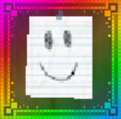
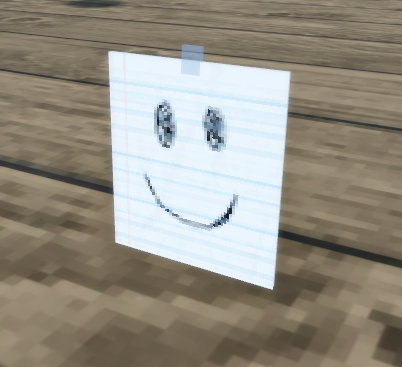

Paper Mask

Info
Slot: Accessory
Recolorable?: No
Unique Colors: None
Particle Effects: None
Sound Effects: None
Owner: Solar
Appearance & Effects
In-game description: No one will know who you are now
The Paper Mask was a relic that was removed from the upon request from its original owner, Solar. It was replaced with Solar's System. The Paper Mask looked like a piece of lined notebook paper with a simple smiley face drawn on top, which would cover the player's face.
Inspiration
The owner, Solar, was doing a little trolling with this 'relic'.

A floating model of the Paper Mask